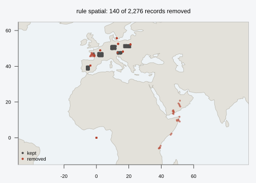
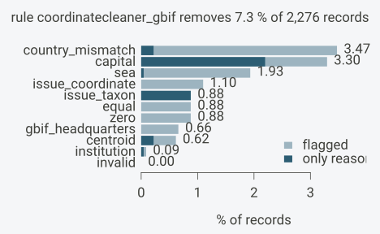
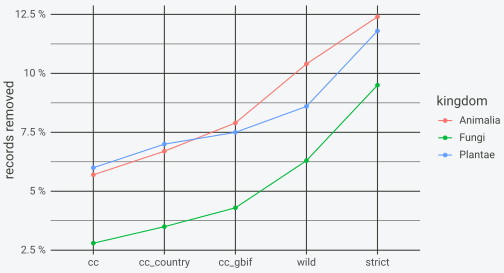

This article runs the whole cleaning workflow on a table shaped like a GBIF download: flag every record with all the tests its columns allow, look at what each test caught, and then compare several cleaning rules over the same flags before choosing one. The data are simulated so that every error is known, which makes it possible to check that each test catches what it should and nothing else. Installation is covered in Get started.
Example data
The table has 2,276 records in GBIF’s lower-case Darwin Core column
names (decimallongitude, countrycode,
basisofrecord, …), which occ_columns() matches
without renaming. Of these, 2,000 are background records drawn at random
inside a box over each of five European countries, with that country’s
code. The boxes follow the borders only roughly: two of the Austrian
points fall across the border in Bavaria, and the country test will say
so.
The other 276 records carry planted errors, labelled in a column
truth so the flags can be checked against it afterwards:
herbarium sheets georeferenced to the capital where they are kept,
coordinates typed as zeros, the GBIF headquarters in Copenhagen as a
default location, swapped and negated coordinates, coordinates entered
at whole degrees, botanic-garden specimens and cultivated plants, and 40
exact copies of background records.
Simulation code
library(OccurrenceCleaner)
library(ggplot2)
set.seed(42)
boxes <- data.frame(code = c("AT", "DE", "FR", "ES", "PL"),
lon0 = c(13.0, 9.0, 1.0, -6.0, 17.0), lon1 = c(15.5, 12.0, 4.0, -4.5, 21.0),
lat0 = c(47.0, 49.5, 45.5, 38.0, 50.5), lat1 = c(48.0, 51.5, 47.5, 40.0, 52.0))
n <- 2000
b <- boxes[sample(nrow(boxes), n, TRUE), ]
spp <- c("Quercus robur", "Fagus sylvatica", "Bufo bufo", "Lucanus cervus", "Amanita muscaria")
occ <- data.frame(
gbifid = as.character(seq_len(n)),
species = sample(spp, n, TRUE),
decimallongitude = round(runif(n, b$lon0, b$lon1), 5),
decimallatitude = round(runif(n, b$lat0, b$lat1), 5),
countrycode = b$code,
year = sample(c(1850:2024), n, TRUE, prob = seq(0.2, 3, length.out = 175)),
coordinateuncertaintyinmeters = sample(c(NA, 10, 30, 100, 1000, 5000), n, TRUE),
basisofrecord = sample(c("HUMAN_OBSERVATION", "PRESERVED_SPECIMEN"), n, TRUE, c(0.8, 0.2)),
establishmentmeans = NA_character_,
issue = "")
occ$kingdom <- ifelse(grepl("Quercus|Fagus", occ$species), "Plantae",
ifelse(occ$species == "Amanita muscaria", "Fungi", "Animalia"))
err <- function(k, truth, lon, lat, code, ...) {
d <- occ[sample(n, k), ]
d$gbifid <- paste0(truth, "-", seq_len(k))
d$decimallongitude <- lon; d$decimallatitude <- lat; d$countrycode <- code
extra <- list(...)
for (nm in names(extra)) d[[nm]] <- extra[[nm]]
d$truth <- truth
d
}
occ$truth <- "background"
capitals <- data.frame(lon = c(16.37, 2.35, -3.70, 13.40, 21.01), lat = c(48.21, 48.86, 40.42, 52.52, 52.23),
code = c("AT", "FR", "ES", "DE", "PL"))
k <- sample(5, 60, TRUE)
bad <- rbind(
err(60, "capital", capitals$lon[k] + rnorm(60, 0, 0.01), capitals$lat[k] + rnorm(60, 0, 0.01),
capitals$code[k], basisofrecord = "PRESERVED_SPECIMEN", year = sample(1850:1950, 60, TRUE)),
err(20, "zero", 0, 0, NA),
err(15, "gbif_hq", 12.58, 55.67, "DK"),
err(25, "swapped", occ$decimallatitude[1:25], occ$decimallongitude[1:25], occ$countrycode[1:25],
issue = "PRESUMED_SWAPPED_COORDINATE"),
err(25, "negated", -occ$decimallongitude[occ$countrycode == "FR"][1:25],
occ$decimallatitude[occ$countrycode == "FR"][1:25], "FR"),
err(30, "rounded", round(occ$decimallongitude[1:30]), round(occ$decimallatitude[1:30]),
occ$countrycode[1:30], coordinateuncertaintyinmeters = NA),
err(20, "living", occ$decimallongitude[31:50], occ$decimallatitude[31:50], occ$countrycode[31:50],
basisofrecord = "LIVING_SPECIMEN"),
err(21, "cultivated", occ$decimallongitude[51:71], occ$decimallatitude[51:71],
occ$countrycode[51:71], establishmentmeans = "CULTIVATED"),
err(20, "fuzzy_taxon", occ$decimallongitude[72:91], occ$decimallatitude[72:91],
occ$countrycode[72:91], issue = "TAXON_MATCH_FUZZY;COORDINATE_ROUNDED"))
dups <- occ[sample(n, 40), ]; dups$gbifid <- paste0("dup-", 1:40); dups$truth <- "duplicate"
occ <- rbind(occ, bad, dups)One record of each kind, and the size of each group:
cols <- c("gbifid", "species", "decimallongitude", "decimallatitude", "countrycode", "issue", "truth")
occ[match(c("background", "capital", "swapped"), occ$truth), cols]
#> gbifid species decimallongitude decimallatitude countrycode
#> 1 1 Amanita muscaria 14.94154 47.07497 AT
#> 10661 capital-1 Lucanus cervus 13.40015 52.50722 DE
#> 5161 swapped-1 Quercus robur 47.07497 14.94154 AT
#> issue truth
#> 1 background
#> 10661 capital
#> 5161 PRESUMED_SWAPPED_COORDINATE swapped
table(occ$truth)
#>
#> background capital cultivated duplicate fuzzy_taxon gbif_hq
#> 2000 60 21 40 20 15
#> living negated rounded swapped zero
#> 20 25 30 25 20The issue column lists GBIF’s issue names separated by
;, which is how both the simple-format download and the
snapshot read through vectra deliver them; a list
column of character vectors works too.
Flagging with every test the columns allow
Without tests, flag_occurrences() runs
every test whose columns are in the table. Running a test only adds its
flags; which records to exclude is chosen later, as a cleaning rule.
occ_columns() only needs to be told the identifier, since
the other defaults match case-insensitively:
f <- flag_occurrences(occ, columns = occ_columns(id = "gbifid"))
dim(f)
#> [1] 2276 34test_plan() lists the tests that ran and the reason each
other test did not. The table has coordinates, a species, a country code
and the three GBIF fields, so the coordinate, GBIF and species outlier
tests run. The fossil tests, the dataset tests, the habitat tests and
the range test need columns or range polygons the table does not have;
the articles on fossils, on outliers and dataset tests and on custom reference points and polygons cover
them:
p <- test_plan(f)
all_tests <- p$test[p$run]
all_tests
#> [1] "invalid" "zero"
#> [3] "equal" "capital"
#> [5] "centroid" "institution"
#> [7] "gbif_headquarters" "sea"
#> [9] "urban" "country_mismatch"
#> [11] "duplicate" "issue_coordinate"
#> [13] "issue_taxon" "issue_date"
#> [15] "issue_rounded" "basis_fossil"
#> [17] "basis_living" "establishment_introduced"
#> [19] "establishment_managed" "outlier"
#> [21] "aohi"
p[!p$run, c("test", "missing")]
#> test missing
#> 20 age_equal min_ma, max_ma
#> 22 age_outlier min_ma, max_ma
#> 23 spatiotemporal_outlier min_ma, max_ma
#> 24 age_range_outlier min_ma, max_ma
#> 25 dataset_ddmm datasetKey
#> 26 dataset_rounded datasetKey
#> 27 range range polygons
#> 29 sea_nonmarine genus
#> 30 land_marine genusThe result is the input with an integer flags column and
one logical column per test. A FALSE in a flag column means
that the test did not flag the record. It does not mean that every test
examined the record: a test that did not run has no column, and a
grouped test leaves a species with too few records untested.
flag_reference() returns the label of the reference data
that produced the flags, with the version of every layer. It is worth
storing next to any cleaned table that goes into an analysis.
The full reference label
flag_reference(f)
#> [1] "OccurrenceCleaner 0.2.0 (land 110; land_110 4.1.0, land_50 4.1.0, land_10 5.1.1, countries_50 5.1.1, urban_50 4.1.0, places_10 5.1.2, admin0_10 5.1.1, admin1_10 5.1.1, factbook factbook.json 144d6977b2b01ac1cbd220de754c0a005616760b, world_borders 0.3 (2008-07-30), geolocate 2026-10-11, institutions 2026-10-09, institutions_wikidata 2026-10-10, institutions_wikipedia en revision 1376233148; de revision 267938927; fr revision 240149609; nl revision 69876533; pt revision 71307420; ar revision 76691072; eo revision 9165115, institutions_geonames 2026-10-10, institutions_bgci 2026-10-10, institutions_index_herbariorum 2026-10-13, institutions_gbif_registry 2026-10-13, institutions_coordinatecleaner_list 3.0.1, aohi 2022-10-10, habitat 2026-10-06)"summary() turns the flags into shares per test. With one
rule of every test, it gives for each test the records it flags, their
percentage, and the records for which it is the only flag:
s <- as.data.frame(summary(f, rules = list(all = all_tests)))
shown <- s[s$flagged > 0, c("test", "flagged", "pct", "only")]| test | flagged | pct | only |
|---|---|---|---|
| zero | 20 | 0.88 | 0 |
| equal | 20 | 0.88 | 0 |
| capital | 75 | 3.30 | 0 |
| centroid | 14 | 0.62 | 2 |
| institution | 2 | 0.09 | 1 |
| gbif_headquarters | 15 | 0.66 | 0 |
| sea | 44 | 1.93 | 1 |
| urban | 80 | 3.51 | 19 |
| country_mismatch | 79 | 3.47 | 5 |
| duplicate | 87 | 3.82 | 41 |
| issue_coordinate | 25 | 1.10 | 0 |
| issue_taxon | 20 | 0.88 | 0 |
| issue_rounded | 20 | 0.88 | 0 |
| basis_living | 20 | 0.88 | 13 |
| establishment_managed | 21 | 0.92 | 14 |
| outlier | 45 | 1.98 | 0 |
| aohi | 41 | 1.80 | 6 |
| (any) | 274 | 12.04 |
The (any) row is the rule as a whole: 274 of the 2,276
records carry at least one flag. The only column counts the
records flagged by that test alone. These are the records the rule would
additionally keep if that test were dropped from it.
Because the errors are labelled, a cross table of tests against the truth shows which test catches which kind of error, and whether any background record is flagged. Tests are in rows and the error groups in columns; the duplicates and the fuzzy taxon matches are left out, since one test each catches them:
show <- c("zero", "equal", "capital", "centroid", "institution", "gbif_headquarters", "sea",
"country_mismatch", "duplicate", "issue_coordinate", "basis_living", "establishment_managed")
groups <- c("background", "capital", "zero", "gbif_hq", "swapped", "negated", "rounded",
"living", "cultivated")
tab <- sapply(show, function(t) tapply(f[[paste0("flag_", t)]], f$truth, sum))
tab <- t(tab[groups, ])| background | capital | zero | gbif_hq | swapped | negated | rounded | living | cultivated | |
|---|---|---|---|---|---|---|---|---|---|
| zero | 0 | 0 | 20 | 0 | 0 | 0 | 0 | 0 | 0 |
| equal | 0 | 0 | 20 | 0 | 0 | 0 | 0 | 0 | 0 |
| capital | 0 | 60 | 0 | 15 | 0 | 0 | 0 | 0 | 0 |
| centroid | 0 | 9 | 0 | 0 | 0 | 0 | 5 | 0 | 0 |
| institution | 0 | 1 | 0 | 0 | 0 | 0 | 1 | 0 | 0 |
| gbif_headquarters | 0 | 0 | 0 | 15 | 0 | 0 | 0 | 0 | 0 |
| sea | 0 | 0 | 20 | 0 | 9 | 15 | 0 | 0 | 0 |
| country_mismatch | 2 | 0 | 20 | 15 | 25 | 17 | 0 | 0 | 0 |
| duplicate | 0 | 0 | 15 | 10 | 0 | 0 | 3 | 7 | 7 |
| issue_coordinate | 0 | 0 | 0 | 0 | 25 | 0 | 0 | 0 | 0 |
| basis_living | 0 | 0 | 0 | 0 | 0 | 0 | 0 | 20 | 0 |
| establishment_managed | 0 | 0 | 0 | 0 | 0 | 0 | 0 | 0 | 21 |
Most error types trip more than one test. All 25 swapped records fail
country_mismatch and carry GBIF’s own
PRESUMED_SWAPPED_COORDINATE warning
(issue_coordinate); 9 of them also land at sea. The 15
GBIF-headquarters records are flagged by gbif_headquarters
and capital (Copenhagen is within 10 km), and by
country_mismatch, because the point lies just off the 1:50
million Natural Earth coastline of Denmark that the country test uses,
while the 1:110 million land of the sea test still covers
it. The zero coordinates fail zero, equal,
sea and country_mismatch.
The negated longitudes show the limit of the spatial tests. Only 18
of 25 are caught: a French record at 1.5 E negated to 1.5 W is still in
western France, on land and in the right country, and no record test can
tell it from a correct one. Of the 30 records entered at whole degrees,
five are caught by centroid, because they fall on the
whole-degree country centroids of France (2 E, 46 N) and Germany (9 E,
51 N), and one by institution. The others are not caught: a
whole-degree point in Austria is still in Austria, and GBIF’s
COORDINATE_ROUNDED warning does not mark them, since it
records that GBIF itself rounded a coordinate to five decimals. Low
precision of this kind is read from
coordinateuncertaintyinmeters when the source states it;
these 30 records state none.
Of the 2,000 background records, 1,998 carry no flag in these
columns. The other two are the points in Bavaria, at 13.0 E, 47.6 to
47.7 N, and country_mismatch is right about them. The
duplicates among the injected groups (7 cultivated, 7 living, 10 at the
GBIF headquarters) arise because those records copy the coordinates of
existing records and sometimes draw the same species.
Where the flagged records are
plot() with type = "map" draws the records
over the Natural Earth land, coloured by whether a rule removes them.
With the CoordinateCleaner-equivalent spatial tests as the rule, the
capital clusters, the point at (0, 0), the swapped records in Arabia and
East Africa and the negated ones in the Atlantic stand out:
spatial <- c("zero", "equal", "capital", "centroid", "institution", "gbif_headquarters",
"sea", "country_mismatch")
plot(f, type = "map", rules = list(spatial = spatial))
How often tests coincide
A record is removed by a rule when it carries any test of that rule,
so the overlap between tests decides how much each extra test adds. The
flag word makes the combinations easy to count: each distinct value of
flags is one combination of tests.
flagged <- f[f$flags != 0L, ]
combo <- vapply(flagged$flags, function(w)
paste(all_tests[vapply(all_tests, function(t) has_flag(w, t), logical(1))], collapse = " + "),
character(1))
knitr::kable(head(sort(table(combo), decreasing = TRUE), 12), col.names = c("tests", "records"))| tests | records |
|---|---|
| capital + urban | 44 |
| duplicate | 41 |
| urban | 19 |
| country_mismatch + issue_coordinate + outlier | 16 |
| issue_taxon + issue_rounded | 15 |
| zero + equal + sea + country_mismatch + duplicate + outlier + aohi | 15 |
| establishment_managed | 14 |
| sea + country_mismatch | 14 |
| basis_living | 13 |
| capital + gbif_headquarters + country_mismatch + duplicate | 10 |
| sea + country_mismatch + issue_coordinate + outlier | 9 |
| duplicate + basis_living | 7 |
The most common combination is capital + urban: a
capital lies inside its own urban area, so in a rule that already
includes capital, adding urban removes only
the city records more than 10 km from the capital point. Of the 20
zero-coordinate records, 15 carry seven tests at once:
zero, equal, sea,
country_mismatch, outlier, aohi
(the inventory has a point at (0, 0)) and duplicate, since
they share their coordinates and often their species. The swapped
records lie far from the other records of their species, so
outlier flags all 25 of them. Records with a single flag
(duplicate, issue_rounded,
establishment_managed, basis_living) are the
ones a rule keeps or loses depending on whether that one test is in
it.
Comparing cleaning rules
A cleaning rule is a set of tests. Five rules, from loose to strict, show the range of choices on the same flags:
coordinatecleaner: the CoordinateCleaner defaults ofclean_coordinates()without the outlier test (invalid, zero, equal, capital, centroid, institution, GBIF headquarters, sea), the same rule as in Choosing a cleaning rule;coordinatecleaner_country:coordinatecleanerplus the country check;coordinatecleaner_gbif:coordinatecleaner_countryplus GBIF’s coordinate and taxon warnings;wild:coordinatecleaner_gbif, and also excludes living specimens and cultivated or managed individuals;strict: every test, including duplicates and GBIF’s rounding note.
rules <- list(
coordinatecleaner = c("invalid", "zero", "equal", "capital", "centroid", "institution",
"gbif_headquarters", "sea"))
rules$coordinatecleaner_country <- c(rules$coordinatecleaner,
"country_mismatch")
rules$coordinatecleaner_gbif <- c(rules$coordinatecleaner_country,
"issue_coordinate", "issue_taxon")
rules$wild <- c(rules$coordinatecleaner_gbif,
"basis_living", "establishment_managed")
rules$strict <- all_tests
t_all <- as.data.frame(tally_flags(f, rules = rules))
ladder <- data.frame(rule = names(rules), tests = lengths(rules),
removed = unlist(t_all[1, paste0("removed_", names(rules))], use.names = FALSE),
kept = unlist(t_all[1, paste0("kept_", names(rules))], use.names = FALSE))
ladder$added <- c(ladder$removed[1], diff(ladder$removed))| rule | tests | removed | kept | added |
|---|---|---|---|---|
| coordinatecleaner | 8 | 125 | 2151 | 125 |
| coordinatecleaner_country | 9 | 146 | 2130 | 21 |
| coordinatecleaner_gbif | 11 | 166 | 2110 | 20 |
| wild | 13 | 207 | 2069 | 41 |
| strict | 21 | 274 | 2002 | 67 |
The ladder removes 125 records under coordinatecleaner
and 274 under strict. The country check adds 21, the GBIF
warnings 20 and the living and cultivated records 41.
strict adds the remaining 67 through duplicate
(42 records, 40 of them the injected copies), urban (20)
and aohi (6), some records carrying more than one; the 20
records with issue_rounded are already removed through
issue_taxon.
For one rule, plot() on the summary draws a bar per
test: the full bar is the share the test flags, the dark part the share
for which it is the only reason the rule removes the record. A test with
a long light bar and a short dark one mostly flags records that other
tests in the rule remove anyway. invalid is 0 here because
every example record has valid coordinates:

tally_flags() returns removed_<rule>
and kept_<rule> for every rule, plus
flagged_<test> for every test, per group. Grouped by
kingdom it shows whether a rule hits one group harder than another. The
share of each kingdom’s records that each rule removes, rules in
rows:
t_k <- as.data.frame(tally_flags(f, by = "kingdom", rules = rules))
share <- sapply(names(rules), function(r) round(t_k[[paste0("removed_", r)]] / t_k$n, 3))
dimnames(share) <- list(t_k$kingdom, names(rules))| Animalia | Fungi | Plantae | |
|---|---|---|---|
| coordinatecleaner | 0.062 | 0.028 | 0.061 |
| coordinatecleaner_country | 0.072 | 0.035 | 0.071 |
| coordinatecleaner_gbif | 0.085 | 0.043 | 0.076 |
| wild | 0.109 | 0.063 | 0.087 |
| strict | 0.132 | 0.102 | 0.119 |
The same table as a figure, one line per kingdom across the rule ladder:
long <- do.call(rbind, lapply(names(rules), function(r)
data.frame(kingdom = rownames(share), rule = r, share = share[, r])))
long$rule <- factor(long$rule, levels = names(rules))
kingdom_cols <- c(Animalia = "#B5342B", Fungi = "#2E6F9E", Plantae = "#3F7A3D")
ggplot(long, aes(rule, share, colour = kingdom, shape = kingdom, group = kingdom)) +
geom_line(linewidth = 1) + geom_point(size = 2.5) +
scale_colour_manual(values = kingdom_cols) +
scale_y_continuous(labels = function(v) paste0(100 * v, " %")) +
labs(x = NULL, y = "records removed") +
theme_minimal(base_size = 17) +
theme(axis.text.x = element_text(angle = 35, hjust = 1),
panel.background = element_rect(fill = "transparent", colour = NA),
plot.background = element_rect(fill = "transparent", colour = NA),
legend.background = element_rect(fill = "transparent", colour = NA))
Record age and coordinate uncertainty
Year and stated coordinate uncertainty are not tests. They stay raw columns and are cut into bins at tally time, so the same flags support any age or precision threshold. Grouping by year bin shows where a rule removes most:
t_y <- tally_flags(f, bins = list(year = c(1900, 1950, 2000)),
rules = rules["coordinatecleaner_country"])
t_y$share <- round(t_y$removed_coordinatecleaner_country / t_y$n, 3)
shown <- t_y[, c("year_bin", "n", "flagged_capital", "removed_coordinatecleaner_country", "share")]| year | n | flagged by capital | removed | share |
|---|---|---|---|---|
| <1900 | 267 | 31 | 37 | 0.139 |
| 1900-1950 | 605 | 34 | 53 | 0.088 |
| 1950-2000 | 846 | 7 | 38 | 0.045 |
| >=2000 | 558 | 3 | 18 | 0.032 |
The rule removes 13.9 % of the records before 1900 and 3.2 % of those
from 2000 on, because the capital-georeferenced herbarium sheets were
simulated with years before 1950. Uncertainty bins work the same way;
records without a stated uncertainty form the group
"missing":
t_u <- tally_flags(f, bins = list(coordinateuncertaintyinmeters = c(100, 1000)),
rules = rules["coordinatecleaner_country"])
shown <- t_u[, c("coordinateuncertaintyinmeters_bin", "n",
"removed_coordinatecleaner_country", "kept_coordinatecleaner_country")]| uncertainty (m) | n | removed | kept |
|---|---|---|---|
| <100 | 775 | 59 | 716 |
| 100-1000 | 370 | 23 | 347 |
| >=1000 | 736 | 36 | 700 |
| missing | 395 | 28 | 367 |
A threshold on uncertainty is then a filter on the raw column next to the rule, for example keeping records with a stated uncertainty of at most 1 km:
kept <- keep_unflagged(f, rules$coordinatecleaner_country)
kept <- kept[which(kept$coordinateuncertaintyinmeters <= 1000), ]
c(records = nrow(f), kept = nrow(kept))
#> records kept
#> 2276 1423The cleaned table
Applying a rule is one call to keep_unflagged(). The
flags stay attached, so a later analysis can still tell which tests the
kept records passed and can tighten the rule without rerunning
anything:
clean <- keep_unflagged(f, rules$wild)
nrow(clean)
#> [1] 2069
table(clean$truth)
#>
#> background duplicate negated rounded
#> 1998 40 7 24The wild rule keeps 1,998 of the 2,000 background
records and removes every injected error except the 40 duplicates, which
it does not target, and 24 of the 30 whole-degree records and the 7
negated records, which no record test can see. The 20 records with a
fuzzy taxon match are removed through issue_taxon, although
their coordinates are fine.
Practical guidance
Run every test the columns allow.
flag_occurrences()does so withouttests, andtest_plan()shows what did not run and why. The pass over the records is the expensive step; rules are a bit-mask query afterwards. On an AMD Ryzen 7 5700G the nine CoordinateCleaner tests that need only coordinates and a species took 1.9 s for one million records in memory (see the timings in Compatibility with CoordinateCleaner).country_mismatchneeds a country code and flags records without one. A record with no code, or one that falls at sea, is flagged, as in CoordinateCleaner. In a GBIF table where many records lackcountrycode, that test alone can flag a large share; the tally per test shows it before it goes into a rule.seadepends on the land scale. The default 1:110 million land is coarse: in the example the GBIF headquarters are on land at that scale and at sea on the 1:50 million coast. For coastal or island taxa,land_scale = 50or10changes the result for records within a few kilometres of the coast; Reference data shows the size of the difference.duplicatedepends on what counts as the same record. By default it is the same coordinates and the samespeciesvalue. Addingduplicate_by = "eventdate"keeps repeat visits apart;duplicate_cell = 0.1treats records in the same 0.1-degree cell as duplicates, which suits a grid-based analysis. On streamed input the test compares records across all input files, as on a data frame.GBIF issue tests are GBIF’s own processing results. They catch errors that the spatial tests cannot see (a swapped coordinate that still lands on land, a fuzzy taxon match).
issue_roundedis a precision note rather than an error: GBIF setsCOORDINATE_ROUNDEDwhen it rounds a coordinate given with more than five decimals, which moves the point by at most about 1 m.Do not cut at a threshold during flagging. Year, uncertainty and any other numeric field belong in
binsor in a subset after the rule, so one flag pass serves every threshold an analysis or a reviewer asks for.